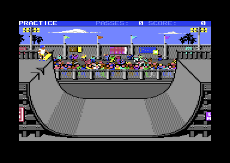
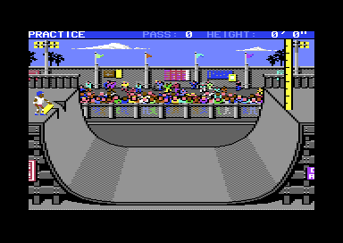
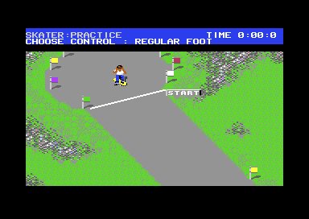
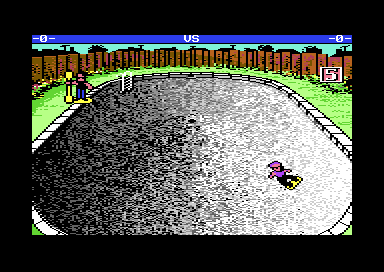

<meta charset="utf-8">
<meta name="viewport" content="width=device-width, initial-scale=1">
<title>Skate or Die!</title>
<link rel="preconnect" href="https://fonts.googleapis.com">
<link rel="stylesheet" href="https://fonts.googleapis.com/css2?family=Lato:wght@400;700;900&family=IBM+Plex+Mono:wght@400;500&display=swap">
<link rel="stylesheet" href="reference/sod-page.css">
<!-- tabs -->
<header class="hero">
  <p class="eyebrow">Commodore 64 · 1987 · Electronic Arts</p>
  <h1>Skate or Die!</h1>
  <p class="sub">The town and the five events, one after another, each from its own code: Rodney's shop and the town square, Freestyle, High Jump, the Downhill Race, the Downhill Jam, and the Pool Joust.</p>
</header>
<main class="wrap">
<div class="level" id="town" data-part="shop">
<section class="level-head">
  <p class="fig">Level · The town</p>
  <h2 class="t">The town</h2>
  <p>Rodney's shop and the town square: where players sign in, how the skater's path chooses an event, and the code that stays in memory to load each event and keep the score.</p>
</section>
<section id="town-shop">
  <p class="fig">01 · The shop</p>
  <h2 class="t">Rodney's counter is the menu</h2>
  <p>After the title, the game opens in Rodney's skate shop. There is no list of options: the player moves a pointer, a sprite of the SKATE OR DIE! logo, over things in the picture, and each one does a job. The shop has 13 such spots (<code>$2113</code>): signing in (<code>$1CEC</code>), choosing a board colour (<code>$1A7E</code>), the records (<code>$1DC8</code>), practice (<code>$2067</code>) and competing (<code>$1A65</code>). Others only make Rodney talk.</p>
  <p>Sign-in takes up to eight skaters with names of up to fifteen letters, and accepting an empty name deletes a skater (<code>$1D5B</code>). Board colours run through every colour but black (<code>$1A7E</code>), and each event paints the skater's board in the colour chosen.</p>
</section>
<section id="town-rodney">
  <p class="fig">02 · Rodney</p>
  <h2 class="t">Point at Rodney and he talks back</h2>
  <p>Rodney has 21 lines (<code>$217E</code>), each 36 letters drawn into a balloon of six sprites as four rows of nine (<code>$0EA9</code>). Every spot in the picture has a line of its own, and the line changes the moment the pointer crosses into another spot (<code>$0C1D</code>). The spots that choose from the menu say what they do. The others are Rodney being Rodney: point at his hair and he asks DONCHA' LIKE MY 'DO'?, and stare at his face and he asks SO WHAT ARE YOU STARING AT?!</p>
  <div class="plate">
    <canvas id="town-shoppic" class="scr" style="max-width:640px;cursor:crosshair"></canvas>
    <div class="out" id="town-say" style="font-family:var(--fm);white-space:pre;margin-top:12px;min-height:5.2em"></div>
    <p class="cap">Rodney's shop drawn from the shop's memory; how the picture is stored and shown is on the <a href="graphics.html#shop">Graphics</a> page. Move over the picture to see what Rodney says there. The spots are the thirteen rectangles at <code>$2113</code>, tried in order, as <code>$1EB6</code> tries them for the pointer.</p>
  </div>
  <p>Below his face, Rodney picks one of eight lines at random each time the pointer arrives (<code>$F90F</code>). The last line is kept for a winner: after a full competition the shop opens with CONGRATS, the top skater's name, and YER TOP SKATER!!! (<code>$26A3</code>).</p>
  <div class="tablewrap"><table class="t" id="town-lines"><tr><th>Where</th><th>Rodney says</th></tr></table></div>
</section>
<section id="town-square">
  <p class="fig">03 · The town square</p>
  <h2 class="t">The edge of the screen you leave by picks the event</h2>
  <p>Practice, or COMPETE ALL, puts the skater in the town square, seen from above. The stick turns the skater a step every two frames, 64 steps to a circle, and pushing it adds speed up to three. There is no friction: the skater keeps rolling with the stick centred, and only pulling back brakes. Diagonals are slower than straight lines, because each step moves sixteen units split between across and down, so a diagonal covers about 70 % of the distance.</p>
  <div class="plate">
    <canvas id="town-town" class="scr" style="max-width:640px"></canvas>
    <p class="cap">The town square drawn from the shop's memory. How it is drawn, and how the game switches between it and the shop, is on the <a href="graphics.html#shop">Graphics</a> page.</p>
  </div>
  <p>The town has no doors to the events, only edges. Its walls are compares in the code rather than a map (<code>$1793</code>, <code>$17E2</code>, <code>$1839</code>, <code>$1888</code>), and which edge the skater rolls off decides what loads: the right edge high up for the <a href="#freestyle">Freestyle ramp</a> and low down for <a href="#highjump">High Jump</a>, the bottom edge on the left for the <a href="#race">Downhill Race</a> and anywhere else along it for the <a href="#jam">Downhill Jam</a>, and the left edge low down for the <a href="#joust">Pool Joust</a>. The left edge high up starts COMPETE ALL; in practice the skater just stops there. The shop door is a small box near the top.</p>
</section>
<section id="town-loading" data-part="resident">
  <p class="fig">04 · Loading an event</p>
  <h2 class="t">Seven rows of a table, and a disk side to check</h2>
  <p>On its first load the shop installs the event manager: it loads it to <span data-part=""><code>$C000</code></span> and copies it up under the KERNAL (<span data-part="shop"><code>$0FD2</code></span>), then marks it as present at <code>$FDFF</code>. The manager and the disk loader beneath it at <code>$F230</code> stay in memory from then on; each event loads over everything below them.</p>
  <p>The manager's load table (<code>$F8A0</code>) has a row for each place it can send the skater: the shop, the five events, and the side check. Each row gives the file, the load address, the entry point, the name for the SKATING TO message, and the disk side. The events are spread over both sides of the disk: the ramp, High Jump, and the Pool Joust on side 1, the Downhill Race and the Jam on side 2. Before loading, the manager reads three bytes from track 18 (<code>$FA69</code>) and compares them with the side it wants; side 1 holds <code>01 01 01</code>, side 2 <code>02 02 02</code>. A mismatch shows INSERT SIDE 2 AND PRESS BUTTON.</p>
  <div class="plate">
    <div class="tablewrap"><table class="t" id="town-loadtab"><tr><th>Row</th><th>File</th><th>Load</th><th>Entry</th><th>Side</th></tr></table></div>
    <p class="cap">The load table at <code>$F8A0</code>, read from the bytes: eight columns of seven bytes (load address, entry point, file, event name, and disk side), the low and high halves of each address in separate columns.</p>
  </div>
  <p>Every file is found by number, not by name: the disk has no directory for them. The loader looks the number up in a table of 49 entries (<code>$F2F9</code>), each a start track, a start sector, and a length, and the drive's own server reads the sectors, eleven apart on most tracks so the next is under the head when the C64 is ready for it.</p>
</section>
<section id="town-results" data-part="resident">
  <p class="fig">05 · Results</p>
  <h2 class="t">Every event reports to the same place</h2>
  <p>An event never returns to the town directly. The event writes its result into a small block of memory at <code>$FE00</code> and jumps to the manager's <code>$FE06</code>. In practice the manager asks PRACTICE AGAIN? and, on YES, re-enters the event without touching the disk (<code>$FE13</code>). In a competition it records the result, calls the next skater, and when everyone has had a turn it sorts the scores (<code>$F743</code>) and gives 5, 3, and 1 points to the first three (<code>$F7E0</code>).</p>
  <p>Back in the shop, the event's top three are merged into the high-score table (<span data-part="shop"><code>$0ACA</code></span>): twelve records of a name, a score, and a colour, where a tie leaves the old holder in place. The table is written back to the disk (<span data-part="shop"><code>$0BB4</code></span>), the only time the game saves anything.</p>
</section>
</div>
<div class="level" id="freestyle" data-part="ramp">
<section class="level-head">
  <p class="fig">Level · Freestyle</p>
  <h2 class="t">Freestyle</h2>
  <p>The Freestyle ramp from the code: ten passes on High Jump's half-pipe, a trick chosen by how you pumped and leaned before the coping, and a bonus for variety.</p>
</section>
<section id="freestyle-event">
  <p class="fig">01 · The event</p>
  <h2 class="t">High Jump's ramp, scored for style</h2>
  <p>Freestyle uses the same <a href="#highjump-ramp">half-pipe</a> as <a href="#highjump">High Jump</a>: the same picture, the same 158 poses, and the same profile of 274 points that turns one number into a place on the ramp (<code>$2FA1</code>). Only the rules differ. The skater gets ten passes, and each pass over the coping is a chance at a trick worth points.</p>
  <figure class="sod-shot"><figcaption>The Freestyle ramp.</figcaption></figure>
  <p>The physics are simpler than High Jump's waggling. Speed gains the slope each frame (<code>$17D7</code>) and friction takes one unit a frame (<code>$1B7C</code>). Speed comes from pumps: the first fire press in each half of the ramp adds to it, but only if the skater is low in the curve when it comes (<code>$1BAF</code>). A press anywhere else wastes that half's pump.</p>
</section>
<section id="freestyle-class">
  <p class="fig">02 · Choosing the trick</p>
  <h2 class="t">The trick is decided before the coping</h2>
  <p>The player does not pick a trick in the air. At the top of each wall the game picks a kind of trick from two things done on the way up: how many pumps counted, none, one or two, and whether the stick was last pushed left or right low in the ramp, with or against the direction of travel (<code>$1C56</code>, <code>$1C81</code>).</p>
  <div class="tablewrap"><table class="t">
    <tr><th>Lean</th><th>No pumps</th><th>One pump</th><th>Two pumps</th></tr>
    <tr><td>None</td><td>air</td><td>air</td><td>air</td></tr>
    <tr><td>Against travel</td><td>spin (class 5)</td><td>turn (class 4)</td><td>held trick (class 3)</td></tr>
    <tr><td>With travel</td><td>plant (class 2)</td><td>plant (class 2)</td><td>air for turns (class 1)</td></tr>
  </table></div>
  <p class="cap">The trick class chosen at the coping, as <code>$1C81</code> picks it, and the phase each class starts from the table at <code>$2E7E</code>. The names describe what each class does on screen; the game names none of them.</p>
</section>
<section id="freestyle-air">
  <p class="fig">03 · Air</p>
  <h2 class="t">Half turns and grabs, priced from a table</h2>
  <p>In the air the stick spins the skater through sixteen poses (<code>$1B10</code>), and pushing against the spin stops it, but only on a half or whole turn (<code>$1AF9</code>). Fire in a forwards, backwards or side-on pose starts a grab, worth two points a frame while it is held (<code>$0FF2</code>). To score, the skater must land facing forwards or backwards, not spinning, and clear of the channel in the middle of the ramp (<code>$0FA0</code>); anything else is a fall.</p>
  <p>The points come from two tables. Plain air is priced by half turns and grabs together, from 25 up to 3,400 (<code>$325B</code>); a side-on grab counts as two. Class 1's air is priced by half turns alone: 100, 200, 400, 800 or 1,600 for none to four (<code>$32FB</code>). Neither table is guarded: five half turns, or sixteen grabs, would read past its end.</p>
</section>
<section id="freestyle-plants">
  <p class="fig">04 · Plants and holds</p>
  <h2 class="t">Points for every frame held</h2>
  <p>The other classes are tricks at the coping, and most pay for how long they are held. The plant (<code>$103F</code>) is worth 200 points, then 2 a frame held, or 4 while drifting along the coping; turning out of it with left or right doubles the trick's score. The held trick of class 3 is worth 500 and then 5 a frame, and ends on fire or a push left or right. The turn of class 4 is a flat 300 with a drift across the ramp, and the spin of class 5 a flat 250.</p>
  <p>A trick's points reach the total only when the next pass starts (<code>$1957</code>), when they pop up beside the skater. They are doubled again if the skater set off from the left wall and has come back over the far side of the channel. The crowd cheers longer after bigger tricks (<code>$0B60</code>).</p>
</section>
<section id="freestyle-falls">
  <p class="fig">05 · Falls and the end</p>
  <h2 class="t">Ten passes, then a bonus for variety</h2>
  <p>There are three ways to fall, each with its own sound: landing over the channel (<code>$1D0A</code>), riding off the side of the ramp (<code>$1D26</code>), or dropping below the coping during a grab or a held trick. A fall scores nothing, and fire sends the skater back to the platform. A fall after the tenth pass, or reaching the eleventh wall, ends the run.</p>
  <p>At the end the game counts the different kinds of trick landed, out of six: the two kinds of air and the four coping tricks, and adds a bonus for variety (<code>$3305</code>): nothing for none, then 500 for one kind, 1,000, 2,000, 4,000, 6,000 and 9,000 for all six. The closing animation is chosen by the total: under 2,500, under 10,000, or more (<code>$2F49</code>).</p>
  <p>The score goes to the <a href="#town-loading">event manager</a> as six digits of BCD (<code>$1F99</code>), though the status line has room for only five (<code>$1CA8</code>). The manager prints all six on the results screen.</p>
</section>
</div>
<div class="level" id="highjump" data-part="highjump">
<section class="level-head">
  <p class="fig">Level · High Jump</p>
  <h2 class="t">High Jump</h2>
  <p>High Jump, from the code: a half-pipe that is really a line, speed that comes from waggling the stick, and a height that belongs to one pass.</p>
</section>
<section id="highjump-event">
  <p class="fig">01 · The event</p>
  <h2 class="t">Go fast to get high</h2>
  <p>The manual calls High Jump a "sheer guts event". The skater drops into a half-pipe and builds speed, and "you get a maximum of five passes on the <i>right</i> side where the height marker is. ... To actually go for it and record the attempt, click the button <i>at the highest point</i> of your jump."<sup class="fn"><a href="about.html#src-1" title="The manual">1</a></sup> The marker is the yellow pole at the top right with its black scale, and the status line at the top keeps count of the passes and the height.</p>
  <figure class="sod-shot"><figcaption>High Jump in practice, the skater waiting on the left platform.</figcaption></figure>
  <p>On the platform the skater fidgets until fire is pressed (<code>$0D50</code>), then pushes off and drops in. The game runs the event as a chain of phases, one routine for each, chosen through a table of nine (<code>$2AB9</code>): waiting, on the ramp, in the air, falling, the two halves of the trick, the return to the platform, and the final pose.</p>
</section>
<section id="highjump-ramp">
  <p class="fig">02 · The ramp</p>
  <h2 class="t">A half-pipe that is one line</h2>
  <p class="lede">The skater never moves freely around the screen. Its position is a single number, from 0 on the left wall to 546 on the right, and a table turns that number into a place on the ramp (<code>$12A0</code>).</p>
  <div class="plate">
    <canvas id="highjump-path" class="scr" style="max-width:728px"></canvas>
    <p class="cap">The 274 points of the profile table at <code>$2ACB</code>, drawn in the game's own ramp coordinates (y grows downwards). The right half is the left half again, read backwards (<code>$12A0</code>). The dashed line is the coping, y 150 (<code>$1AB4</code>); everything above it is air, and the skater gets there by going up the same column the wall makes.</p>
  </div>
  <p>The first 109 entries are a straight column at x 42: the vertical part of the wall, then the air above the coping. A jump is not a separate piece of physics: the skater simply keeps going up the column, and a position below 0 carries on above the top of the table (<code>$12E6</code>). Gravity comes from the same table. Each frame the skater's speed changes by the difference in height between its point and the point sixteen entries ahead, and in the air by a fixed 16 (<code>$147E</code>). Each frame the speed also loses 1/256 of itself (<code>$16C3</code>), so a skater who does nothing slowly comes to rest.</p>
</section>
<section id="highjump-pump">
  <p class="fig">03 · Pumping</p>
  <h2 class="t">Any direction, as fast as you can</h2>
  <p>While the skater is low in the ramp, the game watches the joystick for a newly pressed direction (<code>$16E3</code>). Each one restarts a burst of ten frames that adds to the speed: 6, 6, 6, 6, 6, 6, 4, 3, 2, and 1 (<code>$2DBD</code>). The faster the skater already goes, the more of the burst is cut off from the front, so pumping gives less and less. Only new presses count, and the direction does not matter: tapping one direction every second frame goes as high as alternating left and right at the same rate, and tapping half as often reaches about three quarters of the height. The manual's advice to "move the controller rapidly in any direction" is exactly what the code wants.<sup class="fn"><a href="about.html#src-1" title="The manual">1</a></sup></p>
  <table class="t">
    <tr><th>Pass</th><th>Height recorded</th><th>Shown as</th></tr>
    <tr><td>1</td><td>47 eighths of a foot</td><td>5' 11"</td></tr>
    <tr><td>2</td><td>75 eighths</td><td>9' 5"</td></tr>
    <tr><td>3</td><td>95 eighths</td><td>11' 11"</td></tr>
  </table>
  <p class="cap">Three passes with the stick pressed right and left every two frames and fire never pressed. Each pass's height was cleared when the next began.</p>
</section>
<section id="highjump-height">
  <p class="fig">04 · Height</p>
  <h2 class="t">Eighths of a foot, rounded up</h2>
  <p>The height is kept in eighths of a foot: each frame the game takes the distance of the skater above the coping, adds any trick bonus, and keeps it if it is the most so far (<code>$1AB4</code>). The display shows the feet, then picks the inches from a table for the eighths: 0, 2, 3, 5, 6, 8, 9 or 11 (<code>$2DF1</code>). An eighth of a foot is an inch and a half, so the game rounds every half inch up, and 11 feet 10.5 inches shows as 11' 11".</p>
  <div class="plate">
    <div class="row"><span class="note">Height in eighths</span> <input type="range" id="highjump-h" min="0" max="160" value="95" style="max-width:360px"> <b id="highjump-hv"></b></div>
    <div class="out" id="highjump-hd"></div>
    <p class="cap">The status line's height for each value of <code>$2B</code>, worked out as <code>$17B4</code> does it, and the figure <code>$1ABC</code> keeps. A value of 150 or more is taken as zero, so the most a pass can record is 149 eighths, 18' 8" on screen.</p>
  </div>
  <p>The height belongs to one pass, not to the attempt. The height is cleared when the skater starts a new pass after crossing the middle of the ramp (<code>$1798</code>), and when the skater falls (<code>$163E</code>). What is kept is the height of the pass that ended the attempt: the fifth pass on the right, or the pass on which fire was pressed. A skater who goes 12 feet on the third pass and then 8 on the fifth leaves with 8.</p>
</section>
<section id="highjump-fire">
  <p class="fig">05 · The jump</p>
  <h2 class="t">Fire at the top, and a half-foot tweak</h2>
  <p>Fire only counts in the air above the right wall, and only while the skater holds one of two poses (<code>$0F4B</code>). Fire starts a trick of seven poses. The trick adds four eighths, half a foot, to the height (<code>$104D</code>), the manual's "your tweek will add a few inches",<sup class="fn"><a href="about.html#src-1" title="The manual">1</a></sup> and it locks the controls, so this pass is the one that counts (<code>$108F</code>). The bonus arrives only when the second half of the trick begins (phase <code>$0A</code>), and it counts only if the skater's height plus half a foot then beats the best of the pass (<code>$1AB4</code>). By then the skater may already be on the way down: fire at the top of a 95-eighths pass leaves 95.</p>
  <p>Holding fire for twenty frames or more makes the skater spin in the air (<code>$107D</code>). Coming down to the coping in the middle of the trick, or landing in a pose that is not upright, is a fall (<code>$100D</code>, <code>$0F21</code>): a landing is clean only when the low three bits of the pose number are 0, 1 or 7. A fall clears the height, which is how a pass can show a good figure in the air and end at 0' 0".</p>
  <p>Five passes on the right lock the controls on their own (<code>$1AF4</code>). After that the skater rides back to the left platform, and the game picks one of three final poses by height: one under ten feet, one under thirteen, and one for anything higher (<code>$10F0</code>). Fire on the final pose hands the result to the resident part of the game, as feet and inches in BCD and as the raw eighths (<code>$1A49</code>), and in practice that brings up <a href="#town-results">PRACTICE AGAIN?</a>.</p>
</section>
</div>
<div class="level" id="race" data-part="downhill">
<section class="level-head">
  <p class="fig">Level · Downhill Race</p>
  <h2 class="t">Downhill Race</h2>
  <p>The Downhill Race from the code: a course of 255 rows where every cell says what kind of ground it is, a clock that runs fast in Europe, and a score that is mostly time.</p>
</section>
<section id="race-event">
  <p class="fig">01 · The event</p>
  <h2 class="t">A race against the clock through the park</h2>
  <p>The Downhill Race is on side 2 of the disk. The skater rides down a long scrolling course of roads, ramps, rooftops, a lake, and a drainage pipe, seen from above, against the clock. Down on the stick pushes for speed, up to a limit (<code>$2B41</code>), left and right turn, and fire with a direction jumps, spins or ducks. Before the start the player picks <a href="controls.html#downhill">REGULAR or GOOFY</a> FOOT, and goofy swaps up with down and left with right (<code>$0998</code>).</p>
  <figure class="sod-shot"><figcaption>The Downhill Race.</figcaption></figure>
  <p>The event loads twelve files of its own on its first run (<code>$1D7C</code>): the course, its character set, three sets of sprites, the messages, the sound effects, and a music file that carries code of its own. A PRACTICE AGAIN restart skips the disk.</p>
</section>
<section id="race-course">
  <p class="fig">02 · The course</p>
  <h2 class="t">Every cell knows what kind of ground it is</h2>
  <p>The course is 255 rows of 40 characters (<code>$A600</code>). A second map of the same size gives each cell its colour in the low four bits and its kind of ground in the high four (<code>$7E00</code>). The game never looks at the picture to know where the skater is: it reads the ground type under the skater and the cells beside it and runs a handler for each type (<code>$3B5E</code>, <code>$3B7E</code>).</p>
  <div class="plate">
    <div class="row" id="race-view"><span class="note">View</span><button class="b" data-v="drawn" aria-pressed="true">As drawn</button><button class="b" data-v="ground" aria-pressed="false">Kind of ground</button></div>
    <canvas id="race-drawn" class="scr" style="width:100%;max-width:640px;image-rendering:pixelated"></canvas>
    <canvas id="race-map" class="scr" style="max-width:240px;display:none"></canvas>
    <div id="race-legend" class="note" style="display:none"></div>
    <p class="cap">The whole course, row 0 at the top, two ways. As drawn: the character map at <code>$A600</code>, each cell's colour from the low four bits of <code>$7E00</code>, and the characters at <code>$4800</code>, as the player sees it. Kind of ground: what the game sees, the high four bits of each cell of <code>$7E00</code>, one small square per character cell.</p>
  </div>
  <p>The screen shows 22 rows at a time (<code>$20A5</code>). How those rows are drawn and scrolled, with the course moving in a window, is on the <a href="graphics.html#race">Graphics</a> page.</p>
</section>
<section id="race-clock">
  <p class="fig">03 · The clock</p>
  <h2 class="t">An American clock on a European machine</h2>
  <p>The clock adds a tenth of a second every six frames (<code>$1060</code>) and stops at 9:59.9. Six frames is a tenth of a second on an American C64, which shows 60 frames a second. A European machine shows 50, so there every game second lasts 1.2 real ones. Landing in the water adds three seconds.</p>
</section>
<section id="race-score">
  <p class="fig">04 · The score</p>
  <h2 class="t">A second saved is worth a trick</h2>
  <p>Tricks earn points (<code>$0C47</code>): 2 for the skull ramp, 4 for a roof or for passing a hurdle, 3 for riding into the pipe, 10 for coming out of its mouth, 20 for two half turns in one jump, and 5, 20, 40, and 40 for the jumps over the water in turn (<code>$2DF8</code>). Finishing without a fall is worth 5 more (<code>$0D20</code>). Points count only while the clock is under 1:30, and points earned during a fall are lost.</p>
  <p>The score the event hands back is built from the time (<code>$0B14</code>). Each whole second under 1:30 is worth 100, the tenths add 4 each, and every trick point is worth another 100, so a second saved is worth as much as a trick point. From 1:30 on the time is worth nothing.</p>
  <p>Two slips hide in the sum. The tenths go the wrong way: a time of 45.9 seconds is worth 36 more than 45.0, where it should be worth less. And an addition at <code>$0B9A</code> has no CLC before it, so a run under a minute with no trick points loses another 100. A 45.5-second run with no tricks scores 4,421.</p>
</section>
<section id="race-falls">
  <p class="fig">05 · Falls and the finish</p>
  <h2 class="t">Fourteen scripted actions</h2>
  <p>Riding, the skater is five sprites picked by the direction faced, one of sixteen. Everything else, the falls, the splash, the push-off, and the final poses, is a scripted action of its own (<code>$3E57</code>), drawn piece by piece from shapes stored under the I/O area and mirrored when the skater falls the other way (<code>$281E</code>). The final pose shows how it went (<code>$0A2E</code>): one after three or more falls, one for 40 trick points or more, and one for anything else.</p>
</section>
</div>
<div class="level" id="jam" data-part="jam">
<section class="level-head">
  <p class="fig">Level · Downhill Jam</p>
  <h2 class="t">Downhill Jam</h2>
  <p>The Downhill Jam from the code: two skaters down an alley, twelve ways to hit each other, points for smashing the rubbish, and a time bonus that drains away as the clock runs.</p>
</section>
<section id="jam-event">
  <p class="fig">01 · The event</p>
  <h2 class="t">A race where the other skater is a target</h2>
  <p>The Downhill Jam is a race for two down an alley, back yards, and a street, on side 2 of the disk. In practice the second skater is <a href="index.html#cast">Lester</a>, played by the computer. At the start, whoever presses fire first becomes the left-hand player (<code>$325B</code>), and both then choose <a href="controls.html#jam">REGULAR or GOOFY</a>. The race starts when both have pressed fire (<code>$14F0</code>).</p>
  <p>The stick works as in the <a href="#race">Downhill Race</a>: down pushes, up brakes, left and right lean, and fire with up jumps. Fire with left, right or a diagonal is an attack, one of twelve chosen by the stick and the way the skater faces (<code>$2DC7</code>). Goofy swaps the directions of the moves without fire, but not of the attacks.</p>
</section>
<section id="jam-fight">
  <p class="fig">02 · Fighting</p>
  <h2 class="t">A hit lands on the third frame of five</h2>
  <p>An attack starts only when the skater faces straight down or straight up the hill, and it costs a step of speed (<code>$315C</code>). The attack connects on its third frame (<code>$3947</code>), and only if the two skaters are within 16 pixels of each other both across and down (<code>$0BCF</code>). Four attacks are high and miss a ducking skater; four are low and miss a skater in the air (<code>$0D98</code>). A hit knocks the victim down for 200 frames, and the attacker scores 5.</p>
  <p>When both skaters are mid-attack in the same frame, a table decides what happens (<code>$3BC9</code>): both are shoved, one falls, or both fall. Bumping without attacking has rules of its own (<code>$0DD6</code>). Head on, the skater with the lower reach falls and the other scores 5; side by side or from behind, the two swap speed and heading; crossing paths, both fall.</p>
  <p>One attack can never land. Attack 12, fire with up and left while facing right, has <code>$63</code> where its hitting frame should be (<code>$3953</code>).</p>
</section>
<section id="jam-course">
  <p class="fig">03 · The course</p>
  <h2 class="t">Rubbish worth points, and a police car at the bottom</h2>
  <p>Like the race, the Jam's course is 255 rows of 40 characters, with a second map giving each cell a colour and a kind of ground (<code>$5A00</code>). Cans are worth 2 points, bottles 1, and bins 3, whether the skater hits them or, for cans and bottles, rides over them (<code>$17AA</code>). At the bottom of the hill is a police car. Hitting it low is a crash; jumping onto its roof (<code>$1AAE</code>) sets off the siren and adds <code>$0D</code> to the points waiting to be counted. The game adds in decimal there, so that is 13 points only when the waiting points end in 0.</p>
  <p>Rodney's tip in the shop, SECRET PATH IN DOWNHILL JAM! (<code>$23BE</code>), points at the left edge of the map. Past the fence, at rows 157 to 171, the seven left-hand columns are drawn as the roof of a building, yet their kind of ground is a shadow (type 13), not a wall. A wall in column 7 keeps them apart from the open lane on the right, so they form a covered passage, entered from row 156 and left through the open garage door at row 172. While the skater is under the roof, the shadow handler (<code>$1C44</code>) puts a block sprite over them, expanded and drawn behind the background, so they disappear behind the roof until they come out. LESTER's waypoints (<code>$3BED</code>) keep to the right-hand lane. The path was read from the maps, not ridden.</p>
  <div class="plate">
    <div class="row" id="jam-view"><span class="note">View</span><button class="b" data-v="drawn" aria-pressed="true">As drawn</button><button class="b" data-v="ground" aria-pressed="false">Kind of ground</button></div>
    <canvas id="jam-drawn" class="scr" style="width:100%;max-width:640px;image-rendering:pixelated"></canvas>
    <canvas id="jam-map" class="scr" style="max-width:240px;display:none"></canvas>
    <div id="jam-legend" class="note" style="display:none"></div>
    <p class="cap">The whole course, row 0 at the top, two ways. As drawn: the character map at <code>$8200</code>, each cell's colour from the low four bits of <code>$5A00</code>, and the characters at <code>$4800</code>, as the player sees it; the secret path is the roof on the left, about three-fifths of the way down, below the fence. Kind of ground: what the game sees, the high four bits of each cell of <code>$5A00</code>, by the handlers of the table at <code>$3873</code>; there the roof is a shadow, open to ride.</p>
  </div>
</section>
<section id="jam-bonus">
  <p class="fig">04 · The time bonus</p>
  <h2 class="t">Slow skaters score nothing</h2>
  <p>Each skater starts with a bonus of 9,996 (<code>$20CB</code>). Every six frames it loses 6 and the race clock gains a tenth of a second (<code>$23F8</code>), so the bonus is gone at 2:46.6 on the clock. From then on, points are thrown away as they are earned (<code>$0AD2</code>). Whatever is left at the finish is added to the score, which makes the bonus most of a good score. The clock, as in the race, is set for 60 frames a second, so on a European machine its seconds are 1.2 real ones.</p>
  <p>A skater left 120 pixels behind is dragged back into view (<code>$28D4</code>) and pays for it: five seconds on the clock and 300 off the bonus (<code>$2476</code>). At the end both scores go to the <a href="#town-loading">event manager</a>, six digits each, the second skater's in its own slot (<code>$15F8</code>).</p>
</section>
<section id="jam-lester">
  <p class="fig">05 · Lester</p>
  <h2 class="t">Eleven waypoints and a right hook</h2>
  <p>Lester follows 11 waypoints down the course, each a row, a column, and a heading (<code>$3BED</code>). Lester holds his speed against the player's position rather than racing (<code>$3397</code>), and when the player is within 16 pixels and on their feet he attacks, always with fire and right (<code>$33BD</code>).</p>
</section>
</div>
<div class="level" id="joust" data-part="joust">
<section class="level-head">
  <p class="fig">Level · Pool Joust</p>
  <h2 class="t">Pool Joust</h2>
  <p>The Pool Joust from the code: an empty pool, a padded pole that changes hands every five passes, three computer skaters with their own habits, and a match won like deuce in tennis.</p>
</section>
<section id="joust-event">
  <p class="fig">01 · The event</p>
  <h2 class="t">Knock the other skater off</h2>
  <p>Two skaters ride an empty swimming pool, and the one holding the pole tries to knock the other off. Fire swings the pole for 32 frames, then rests it for another 32 before it can swing again (<code>$205A</code>, <code>$2073</code>). The opponent can be a second player or one of three computer skaters, chosen on a screen of portraits before the match (<code>$2086</code>).</p>
  <figure class="sod-shot"><figcaption>The Pool Joust in play.</figcaption></figure>
  <div class="plate">
    <canvas id="joust-choice" class="scr" style="max-width:640px"></canvas>
    <p class="cap">The opponent-choice picture, drawn from the joust's memory.</p>
  </div>
  <p>The joust is the only event that does not start at <span data-part=""><code>$0880</code></span>: its file loads to <code>$0820</code>. How its two pictures are unpacked and shown, one of them from the RAM beneath the I/O chips, is on the <a href="graphics.html#joust">Graphics</a> page.</p>
</section>
<section id="joust-hit">
  <p class="fig">02 · The hit</p>
  <h2 class="t">Close enough, and swinging</h2>
  <p>A hit needs the pole to be mid-swing and the two skaters to be close (<code>$1A85</code>): neither already knocked off or climbing out, not both on the deck, less than 8 apart across the pool, and less than 15 pixels apart on the screen, counting across and down together. The holder scores a point and the other skater is thrown: the body flies off along the ramp while the board rolls on (<code>$0FF3</code>).</p>
  <p>Tricks are chosen as on the <a href="#freestyle">Freestyle ramp</a>, with a push left or right below the coping, but any landing is accepted: in the joust no pose counts as a fall (<code>$10E2</code>). The only way down is the pole.</p>
</section>
<section id="joust-passes">
  <p class="fig">03 · Passes and rounds</p>
  <h2 class="t">Five passes with the pole, then it changes hands</h2>
  <p>Each time the skater without the pole reaches the top of a wall, a pass is used (<code>$0FD1</code>). A small counter beside the holder shows 5 down to 1, and after the fifth pass the pole goes to the other skater. When both skaters are back on the deck the round ends, and the next starts with the pole in the hands of the skater who did not start the last one (<code>$1792</code>).</p>
</section>
<section id="joust-score">
  <p class="fig">04 · Winning</p>
  <h2 class="t">First to three, by two clear</h2>
  <p>The scores show as -0-, -1-, and -2- until someone reaches 3. From then on each side shows the lead instead (<code>$1B3C</code>): --- for the skater behind, TIE when level, ADV one ahead, and WIN two ahead. The match is first to three points with a two-point lead, like deuce in tennis.</p>
  <p>The joust hands the <a href="#town-loading">event manager</a> no score, only a 1 for the winner, in the first skater's slot or the second's (<span data-part="resident"><code>$FE03</code></span>, <span data-part="resident"><code>$FE0C</code></span>). A computer opponent's win is not recorded at all.</p>
</section>
<section id="joust-cpu">
  <p class="fig">05 · The computer skaters</p>
  <h2 class="t">Three personalities, one joystick routine</h2>
  <p>The computer plays by building a joystick byte as a player's stick would give it (<code>$1D4F</code>). The three opponents, Poseur Pete, Aggro' Eddie, and <a href="index.html#cast">Lester</a> (<code>$2F61</code>), differ in a few numbers and a routine each (<code>$1E01</code>):</p>
  <div class="tablewrap"><table class="t">
    <tr><th></th><th>Poseur Pete</th><th>Aggro' Eddie</th><th>Lester</th></tr>
    <tr><td>Frames between decisions (<code>$2F69</code>)</td><td>15</td><td>7</td><td>1</td></tr>
    <tr><td>Stops closing in, holding the pole, within (<code>$2F7D</code>)</td><td>12</td><td>5</td><td>3</td></tr>
    <tr><td>Keeps away, without the pole (<code>$2F85</code>, <code>$2F81</code>)</td><td>8 to 20</td><td>10 to 30</td><td>15 to 45</td></tr>
    <tr><td>Habits</td><td>drops in at once, turns at random</td><td>drops in when the player is high on the right, turns towards or away</td><td>waits a random time, times its tricks by the player's speed and height (<code>$1F54</code>)</td></tr>
  </table></div>
  <p class="cap">The distances are in the game's units across the pool. Holding the pole, every computer skater swings as soon as the player is in reach (<code>$0DB8</code>).</p>
  <p>Lester was meant to do one thing more. Lester's routine starts with a call to an RTS (<code>$1F73</code>), and the code just after it, which would set how far Lester keeps away along the ramp, never runs.</p>
</section>
</div>
</main>
<script src="../../lib/c64.js"></script>
<script src="reference/sod-page.js"></script>
<script>
(async function () {
  try {
    const S = await SOD.load('shop');
    SOD.mcBitmap(document.getElementById('town-town'), S.ram, { bitmap: 0x4000, screen: 0x6000, colour: 0xE000, bg: 0, s: 2 });
    // Rodney: the shop picture (bitmap $A000, screen $8000, colours $9C00), the 13 hotspots at $2113
    // (x from, x to, y from, y to in pointer units: x 2 pixels, y lines; then the item) and the 21 lines
    // at $217E through the pointers at $2154/$2169. Item bit 7: talk only; $FF: none (line $13, blank);
    // item $0B: a random line from $0B-$12.
    const Sm = S.ram, line = n => { const a = Sm[0x2154 + n] | Sm[0x2169 + n] << 8, t = [];
      for (let i = 0; i < 36; i++) { const c = Sm[a + i] & 0x3F; t.push(c < 32 ? String.fromCharCode(c + 64) : String.fromCharCode(c)); }
      return [0, 9, 18, 27].map(k => t.slice(k, k + 9).join('')).join('\n'); };
    const one = n => line(n).split('\n').map(r => r.trim()).filter(r => r).join(' ');
    const spots = []; for (let k = 0; k < 13; k++) spots.push(Array.from(Sm.slice(0x2113 + 5 * k, 0x2118 + 5 * k)));
    const shop = document.getElementById('town-shoppic'), say = document.getElementById('town-say');
    SOD.mcBitmap(shop, Sm, { bitmap: 0xA000, screen: 0x8000, colour: 0x9C00, bg: 0, s: 2 });
    const random = [11, 12, 13, 14, 15, 16, 17, 18];
    function at(e) {
      const r = shop.getBoundingClientRect(), x = (e.clientX - r.left) * 320 / r.width, y = (e.clientY - r.top) * 200 / r.height;
      const X = Math.floor(x / 2), Y = Math.floor(y), h = spots.find(([x0, x1, y0, y1]) => X >= x0 && X < x1 && Y >= y0 && Y < y1);
      const it = h ? h[4] & 0x7F : 0x7F;
      say.textContent = it === 0x7F ? '' : it === 11 ? 'One of these, at random:\n' + random.map(one).join('\n') : line(it);
    }
    shop.addEventListener('mousemove', at); shop.addEventListener('click', at);
    const where = [[0, 'the sign-in sheet; fire signs in'], [1, 'the top left corner'], [2, 'the right wall; fire chooses a board colour'],
      [3, 'the trophy; fire shows the records'], [4, 'GO PRACTICE'], [5, 'GO COMPETE'], [6, 'the top edge, left'], [7, 'his hair'],
      [8, 'the top edge, right'], [9, 'his face'], [10, 'his tattoo']];
    const lt = document.getElementById('town-lines');
    for (const [n, w] of where) lt.insertAdjacentHTML('beforeend', `<tr><td>${w}</td><td>${one(n)}</td></tr>`);
    lt.insertAdjacentHTML('beforeend', `<tr><td>below his face, one at random</td><td>${random.map(one).join('<br>')}</td></tr>`);
    lt.insertAdjacentHTML('beforeend', `<tr><td>the shop after a full competition</td><td>${one(20).replace('YER', '(the winner) YER')}</td></tr>`);
    // eight columns of seven rows: load lo, load hi, entry lo, entry hi, file, name lo, name hi, side ($F8A0)
    const R = await SOD.load('resident'), M = R.ram, t = document.getElementById('town-loadtab');
    const names = ['Shop', 'Freestyle', 'High Jump', 'Race', 'Jam', 'Pool Joust', 'Side check'];
    const h = (v, n) => '$' + v.toString(16).toUpperCase().padStart(n, '0');
    for (let r = 0; r < 7; r++) {
      const c = k => M[0xF8A0 + 7 * k + r];
      t.insertAdjacentHTML('beforeend', `<tr><td>${names[r]}</td><td>${h(c(4), 2)}</td><td>${h(c(0) | c(1) << 8, 4)}</td><td>${h(c(2) | c(3) << 8, 4)}</td><td>${c(7) || '-'}</td></tr>`);
    }
  } catch (e) { SOD.fail(e); }
})();
</script>
<script>
(async function () {
  let G; try { G = await SOD.load('highjump'); } catch (e) { SOD.fail(e); return; }
  const M = G.ram, cv = document.getElementById('highjump-path'), s = 2;
  const P = []; for (let i = 0; i < 274; i++) P.push([M[0x2ACB + 2 * i], M[0x2ACC + 2 * i]]);
  const ctx = C64.canvas(cv, 364 * s, 200 * s);
  ctx.fillStyle = '#1b1d22'; ctx.fillRect(0, 0, cv.width, cv.height);
  const Y = y => (y - 50) * s, X = x => x * s;
  ctx.strokeStyle = '#ffd400'; ctx.setLineDash([6, 6]); ctx.beginPath(); ctx.moveTo(0, Y(150)); ctx.lineTo(cv.width, Y(150)); ctx.stroke(); ctx.setLineDash([]);
  ctx.fillStyle = '#ffd400'; ctx.font = (11 * s / 2 + 4) + 'px IBM Plex Mono, monospace'; ctx.fillText('coping, y 150', X(200), Y(146));
  const dot = (x, y, c) => { ctx.fillStyle = c; ctx.fillRect(X(x) - 1, Y(y) - 1, 3, 3); };
  P.forEach(([x, y], i) => { const c = y < 150 ? '#75cec8' : '#e9e7e1'; dot(x, y, c); dot(364 - x, y, c); });
  ctx.fillStyle = '#b2b2b2'; ctx.fillText('s = 0', X(48), Y(66)); ctx.fillText('s = 546', X(270), Y(66)); ctx.fillText('s = 273', X(165), Y(234));
  const inch = []; for (let i = 0; i < 8; i++) inch.push(String.fromCharCode(M[0x2DF1 + 2 * i], M[0x2DF2 + 2 * i]));
  const h = document.getElementById('highjump-h');
  function show() {
    const v = +h.value, k = v >= 150 ? 0 : v;
    document.getElementById('highjump-hv').textContent = v + (v >= 150 ? ' (kept as 0)' : '');
    document.getElementById('highjump-hd').textContent = 'HEIGHT: ' + Math.floor(k / 8) + "'" + inch[k & 7] + '"   (' + (k / 8).toFixed(3) + ' ft)';
  }
  h.oninput = show; show();
})();
</script>
<script>
(async function () {
  try {
    const D = await SOD.load('downhill'), M = D.ram, s = 4, cv = document.getElementById('race-map');
    const ctx = C64.canvas(cv, 40 * s, 255 * s);
    // the terrain types of $7E00's high nibble, as the facts name them, and a colour for each
    const T = [['road', 15], ['ramp', 10], ['ramp wall', 2], ['ramp wall', 2], ['rough', 9], ['water', 6], ['roof', 8], ['grass', 5],
               ['bench', 7], ['start, finish, islands', 1], ['wall', 0], ['flag', 4], ['object', 3], ['pipe top', 12], ['pipe mouth', 14], ['pipe', 11]];
    for (let r = 0; r < 255; r++) for (let c = 0; c < 40; c++) {
      ctx.fillStyle = C64.PAL[T[M[0x7E00 + r * 40 + c] >> 4][1]]; ctx.fillRect(c * s, r * s, s, s);
    }
    const seen = new Set();
    document.getElementById('race-legend').innerHTML = T.filter(t => !seen.has(t[0]) && seen.add(t[0])).map(t =>
      `<span style="display:inline-block;width:10px;height:10px;background:${C64.PAL[t[1]]};border:1px solid #888;margin:0 4px 0 10px"></span>${t[0]}`).join(' ');
    const dv = document.getElementById('race-drawn');
    SOD.charMap(C64.canvas(dv, 320, 255 * 8), M, { map: 0xA600, attr: 0x7E00, charset: 0x4800, from: 0, rows: 255, bg: 0x0C, mc1: 0x0F, mc2: 0x0B });
    document.querySelectorAll('#race-view button').forEach(b => b.onclick = () => {
      const g = b.dataset.v === 'ground';
      document.querySelectorAll('#race-view button').forEach(x => x.setAttribute('aria-pressed', x === b));
      dv.style.display = g ? 'none' : ''; cv.style.display = document.getElementById('race-legend').style.display = g ? '' : 'none';
    });
  } catch (e) { SOD.fail(e); }
})();
</script>
<script>
(async function () {
  try {
    const J = await SOD.load('jam'), M = J.ram, s = 4, cv = document.getElementById('jam-map');
    const ctx = C64.canvas(cv, 40 * s, 255 * s);
    // the attribute map's high nibble, by the terrain handlers of $3873 (parts/jam/facts.md)
    const T = [['open ground', 15], ['wall', 0], ['solid object', 9], ['fall', 2], ['solid object', 9], ['open ground', 15], ['can or bottle', 7],
               ['fall', 2], ['hazard', 10], ['striped ramp', 14], ['kerb', 12], ['clothesline, finish', 1], ['moving object lane', 4], ['shadow', 11],
               ['open ground', 15], ['rough, police car', 8]];
    for (let r = 0; r < 255; r++) for (let c = 0; c < 40; c++) {
      ctx.fillStyle = C64.PAL[T[M[0x5A00 + r * 40 + c] >> 4][1]]; ctx.fillRect(c * s, r * s, s, s);
    }
    const seen = new Set();
    document.getElementById('jam-legend').innerHTML = T.filter(t => !seen.has(t[0]) && seen.add(t[0])).map(t =>
      `<span style="display:inline-block;width:10px;height:10px;background:${C64.PAL[t[1]]};border:1px solid #888;margin:0 4px 0 10px"></span>${t[0]}`).join(' ');
    const dv = document.getElementById('jam-drawn');
    SOD.charMap(C64.canvas(dv, 320, 255 * 8), M, { map: 0x8200, attr: 0x5A00, charset: 0x4800, from: 0, rows: 255, bg: 0x0B, mc1: 0x0C, mc2: 0x00 });
    document.querySelectorAll('#jam-view button').forEach(b => b.onclick = () => {
      const g = b.dataset.v === 'ground';
      document.querySelectorAll('#jam-view button').forEach(x => x.setAttribute('aria-pressed', x === b));
      dv.style.display = g ? 'none' : ''; cv.style.display = document.getElementById('jam-legend').style.display = g ? '' : 'none';
    });
  } catch (e) { SOD.fail(e); }
})();
</script>
<script>
(async function () {
  try {
    const J = await SOD.load('joust');
    SOD.mcBitmap(document.getElementById('joust-choice'), J.ram, { bitmap: 0xC000, screen: 0xE400, colour: 0xE000, bg: 0, s: 2 });
  } catch (e) { SOD.fail(e); }
})();
</script>
<script>
// Old bookmarks (jam.html#course) arrive as levels.html#course: the ids here carry the level's prefix,
// so go to the old page's own section (named by the forwarding page's address), or else the first whose id ends with the fragment.
(function () {
  const h = decodeURIComponent(location.hash.slice(1));
  if (!h || document.getElementById(h)) return;
  const from = (document.referrer.match(/\/(\w+)\.html/) || [])[1];
  const el = (from && document.getElementById(from + '-' + h)) || [...document.querySelectorAll('[id]')].find(e => e.id.endsWith('-' + h));
  if (el) { history.replaceState(null, '', '#' + el.id); el.scrollIntoView(); }
})();
</script>
